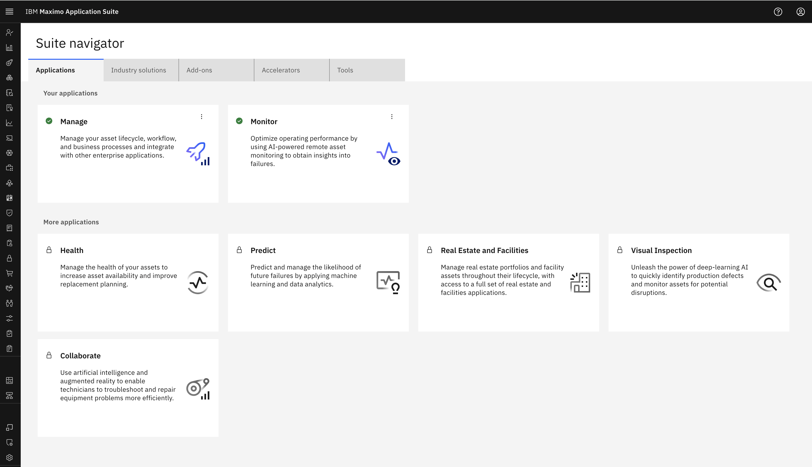
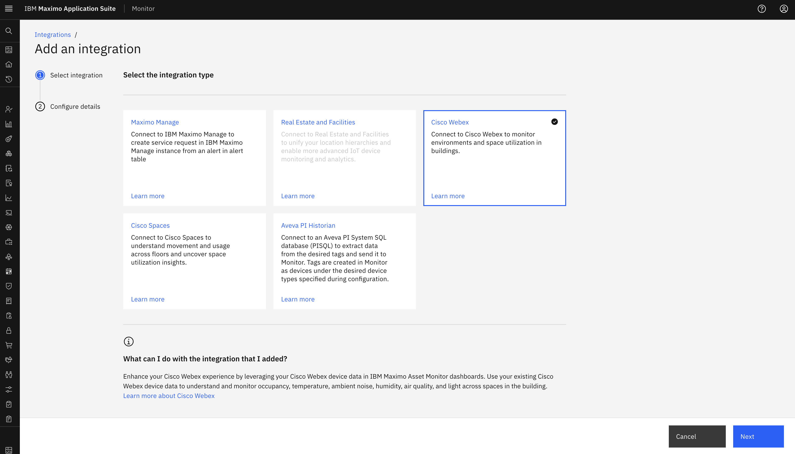
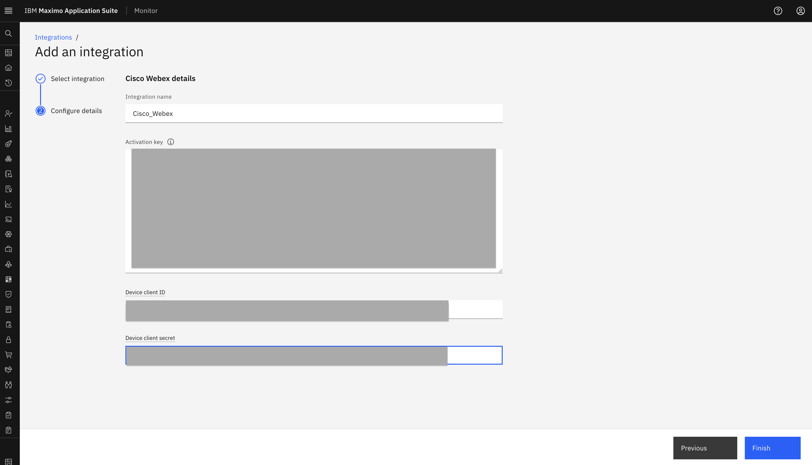

Objectives
In this Exercise you will learn how to create the Cisco Webex Integration in Monitor.
Before you begin:
This Exercise requires that you have:
- completed the pre-requisites required for all labs
- completed the previous exercises
Login to MAS: 
Expand Setup under the Monitor setup section in the left menu and select Integration:

New in MAS 9.1
Monitor no longer have a main home page. All interaction with Monitor is initiated from the Monitor section in the left menu
Select Add Integration:

Select Cisco Webex and click Next:

Define the Integration name Integration name, JWT Token Activation key, Device client ID Device client ID and Device client secret Device client secret:

Tip
Activation key, Device client ID and Device client secret will be provided by Cisco Webex hub
Click Finish:

You will now see your new Cisco Webex integration.
Note
We will not be able to edit the Integration Name as with that name we have already created a Webex Device Type in Monitor
Congratulations you have successfully created the Cisco Webex integration in Monitor.